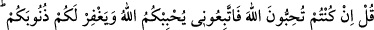
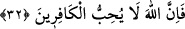
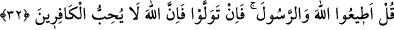

PEYGAMBER’E TÂBİ OLMAK
31. (Rasûlüm!) De ki: Eğer Allah’ı seviyorsanız bana uyunuz ki Allah da sizi
sevsin ve günahlarınızı bağışlasın. Allah son derece bağışlayıcı ve esirgeyicidir.
32. De ki: Allah’a ve Rasûlü’ne itâat edin. Eğer yüz çevirirlerse bilsinler ki Allah
kâfirleri sevmez.
“De ki: Eğer siz Allah’ı seviyorsanız bana tâbi olun ki Allah da sizi sevsin ve
günahlarınızı bağışlasın.” Bu âyet-i celîle, Peygamberimiz (s.a.)’in; Kâ’b ibn Eşref ve
adamlarını îmana çağırması, onların da; “biz Allah’ın oğulları ve dostlarıyız” (el-
Mâide, 5/18) diye cevap vermeleri üzerine nâzil olmuştur. Allah Teâlâ, peygamberine
şöyle buyurmuştur: “Onlara de ki: Ben Allah’ın rasûlüyüm. Sizi O’na çağırıyorum. Eğer
siz Allah’ı seviyorsanız O’nun dîni üzere bana uyunuz; emirlerimi kabul ediniz ki Allah
da sizi sevsin ve sizlerden râzı olsun.”
Muhabbet; gönlün, gördüğü kemal sebebiyle bir şeye, meyletmesidir. Bu sebeple
insan, kendini ona yaklaştıracak şeye daha fazla önem verir. İnsan, hakiki kemâlin
Allah’a mahsûs olduğunu bildiği, kendinde ve başkasında gördüğü kemâlin de
Allah’dan ve Allah’ın tevfikiyle olduğunu ve Allah’a nisbet edilmesi gerektiğini idrâk
ettiği müddetçe muhabbeti ancak Allah’a olur ve Allah için olur. Bu da Allah’a itâatı
dilemeyi ve O’na yaklaştıracak şeyi istemeyi gerektirir. Bu sebeple, muhabbet; “itâatı
istemek” şeklinde tefsir olunmuş ve Allah’a itâat, Rasûlullah (s.a.)’e tâbi olmak şartına
bağlanmıştır. Bu nedenle mü’min Rasûlullah’a itâate çok önem verir.
“Ve günahlarınızı bağışlasın.” Sizden sâdır olan büyük günahlar sebebiyle
kalpleriniz üzerine gerilen perdeleri kaldırsın, sizleri izzet cennetlerine yaklaştırsın,
kudsünün komşuluğuna hazırlasın. Bu mâna, istiâre ve müşâkele yoluyla muhabbet diye
ifade edilmiştir.
“Allah çok bağışlayıcı, çok merhamet edicidir.” Hıristiyanlara kendini sevdirmeye
çalışanlar ve Meryem oğlu Îsâ (a.s.)’a tâbi olanlar, Muhammed (a.s.)’a tâbi oldukları
takdirde Allah mağfiret ve merhamet edicidir.